Ruang dibina dengan rasa
Renovation and construction for homes, offices and commercial spaces. From the first consultation to the final handover, Bina Haus brings your project together under one team.
Reka bentuk dan pembinaan di bawah satu pasukan: yang melukis, membina.†
Ilustrasi teknikal dilukis khas untuk pratonton ini, bukan lukisan projek. Ia menunjukkan cara kami bekerja: satu geometri diputuskan dahulu, kemudian dibina oleh pasukan yang sama. Sebelah kiri keputusan reka bentuk, sebelah kanan binaan; satu garis kerja biru merentasi kedua-duanya.
Satu tangan, dari lukisan ke tapak.†
Kami tidak pindah tangan. Orang yang ambil ukuran dan pilih bahan adalah orang yang sama yang berdiri di tapak dan siapkan kerja, jadi tiada jurang antara lukisan dan binaan.†
Sebab itu kami simpan daftar keputusan: apa yang dipilih, kenapa ia dipilih, dan apa ia jadi bila siap. Bila satu pihak memutuskan dan membina, setiap keputusan boleh dipertanggungjawabkan.†
Contoh format: daftar keputusan†
- K-01 Kapur Dinding luar: kapur, dua lapis, bukan cat plastik. Rumah lama perlu bernafas. Kapur benarkan lembapan keluar; cat plastik perangkap dia. BinaDicampur dan disapu oleh tukang kami sendiri.
- K-02 Kayu keras Bingkai tingkap kayu keras, profil 2×3. Kayu duduk rata dengan plaster. Aluminium selalu tinggal celah yang kena tampal. BinaRangka dipasang, disilikon, plaster dibuat sekeliling.
- K-03 Jubin Jubin lantai 600×600, nat 3mm, warna nat sama. Nat gelap buat lantai nampak kotor. Nat sama warna buat lantai nampak satu permukaan. BinaDipasang dan di-grout oleh pasukan yang ambil ukuran.
- K-04 Terrazzo Siling plaster rata, skirting 100mm. Skirting tutup celah lantai dan lindung dinding masa dicuci. BinaDibentuk di tapak; skirting dibawa ke tapak oleh kami.
Contoh format sahaja, bukan rekod projek sebenar. Isi kandungan sebenar perlu datang dari Bina Haus.†
A better space starts with the right work.
Whether you're renovating the whole house or improving specific parts of your space, Bina Haus handles the work with attention to detail from start to finish.
Renovasi dan pembinaan: dua skala kerja, satu pasukan yang sama.†
Renovations
Ruang sedia ada, dibaiki sepenuhnya.
- 01Full house RenovationGive your existing home a complete transformation and a fresh new feel.
- 02Kitchen RenovationsUpgrade your kitchen into a space that works better for everyday living.
- 03ExtensionCreate the additional space you need within your existing property.
- 04FlooringRefresh your space from the ground up with properly installed flooring.
- 05Plaster CeilingGive your interior a cleaner and more refined finish.
- 06PaintingRefresh the look and feel of your space with a new finish.
- 07Electrical & PlumbingEssential electrical and plumbing works for your renovation project.
Construction
Built for what comes next.
Whether you're building a new house, extending your existing property or carrying out structural works, Bina Haus takes your project from planning to completion.
- 01New house ConstructionsBuilding your new home from the ground up.
- 02House ExtensionAdd the extra space your home needs as your needs grow.
- 03Structural WorksStructural works required for your construction project.
Hasil Kerja†
See the work for yourself. A collection of work by Bina Haus. Gambar, render dan video daripada kerja sebenar, dikumpulkan sebagai satu badan kerja.†
-
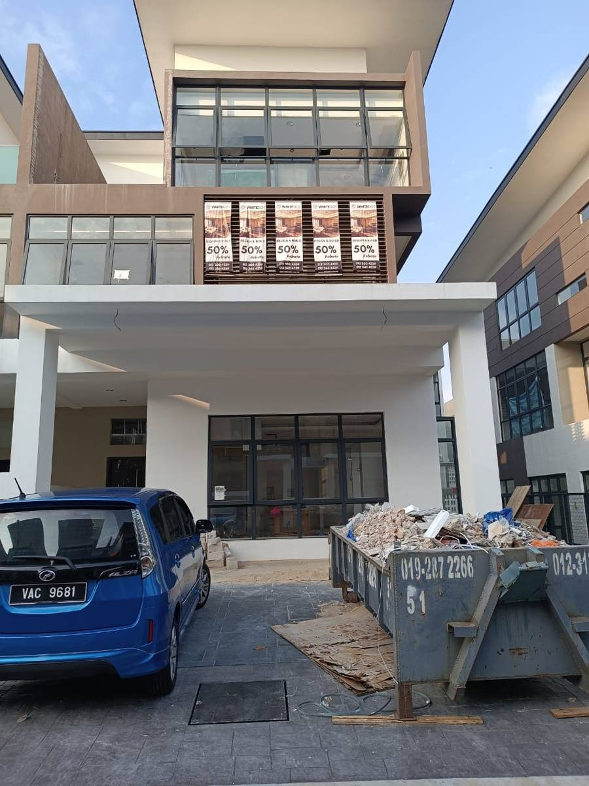
FotoBangunan sedia ada, kerja luaran -
VideoUnit dalam kerja, kaca & pelindung(setempat) -
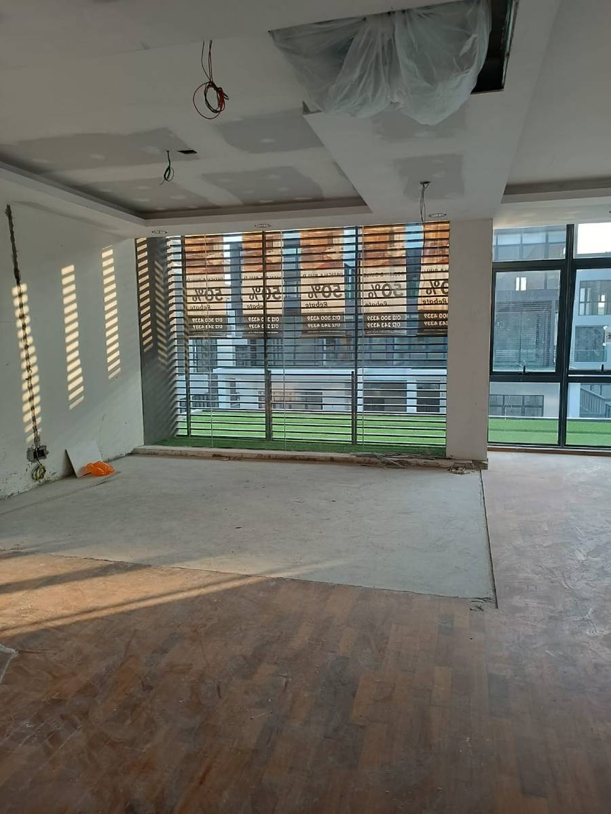
FotoRuang dalaman, tingkap besar -
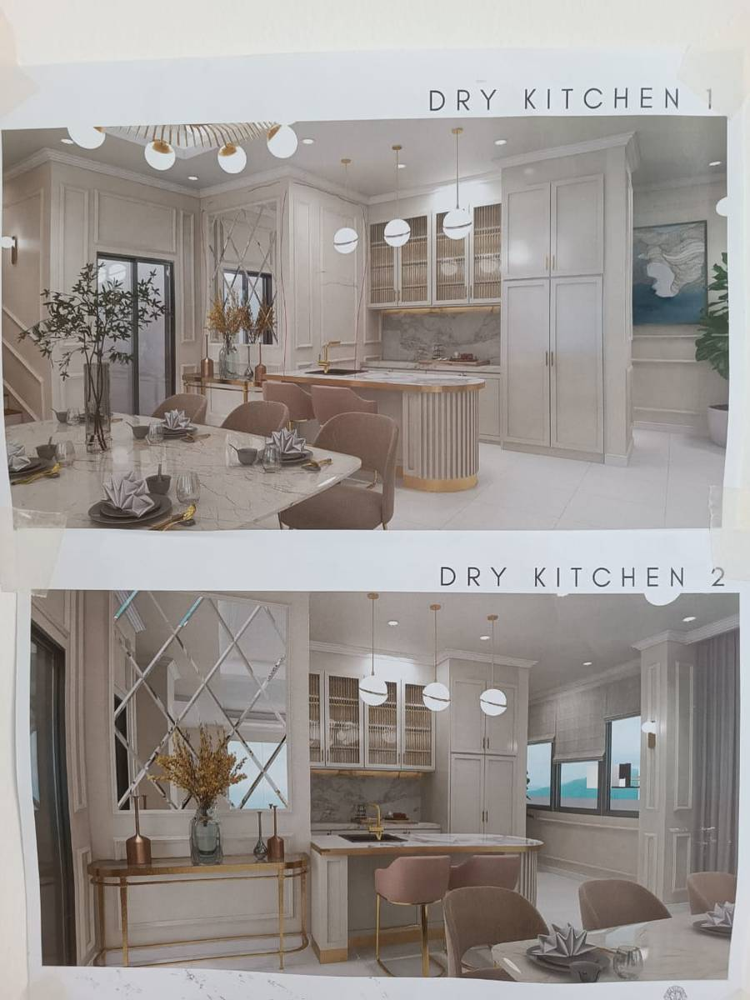
RenderDry Kitchen -
VideoUnit komersial, partition kaca(setempat) -
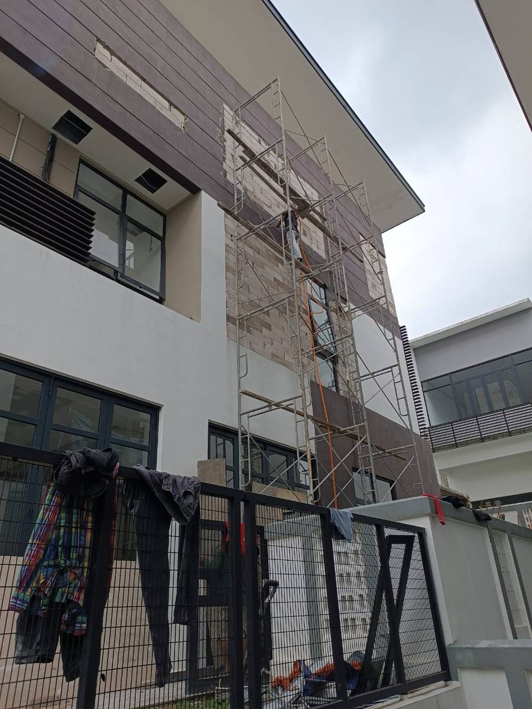
FotoKerja luaran, scaffold -
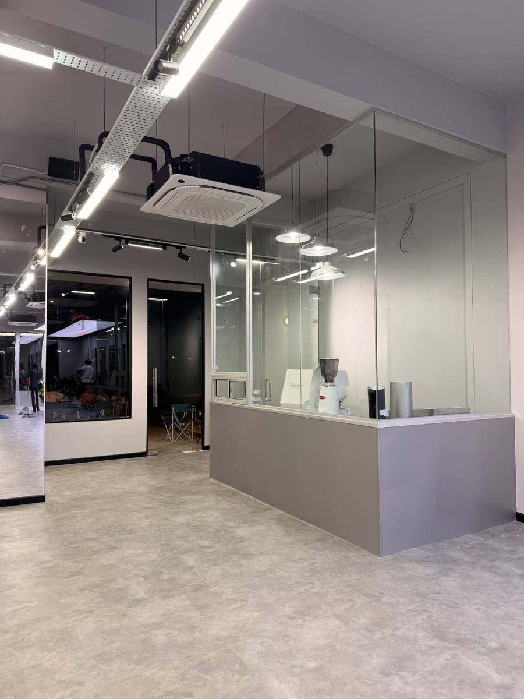
FotoRuang dalaman, lantai kayu -
VideoJubin lantai(binahaus.com) -
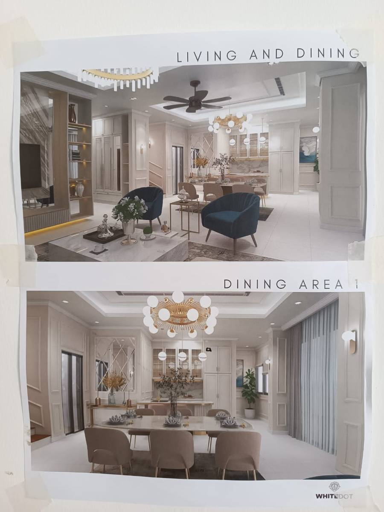
RenderLiving and Dining -
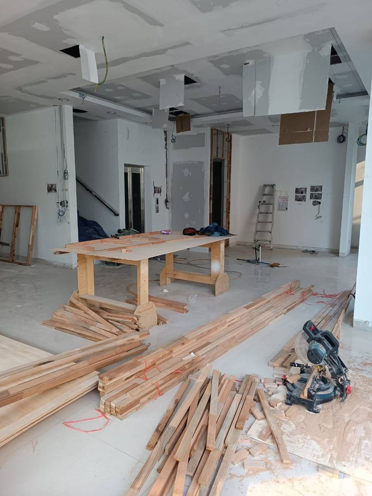
FotoTapak kerja, kayu di lantai -
VideoPintu & dinding(binahaus.com) -
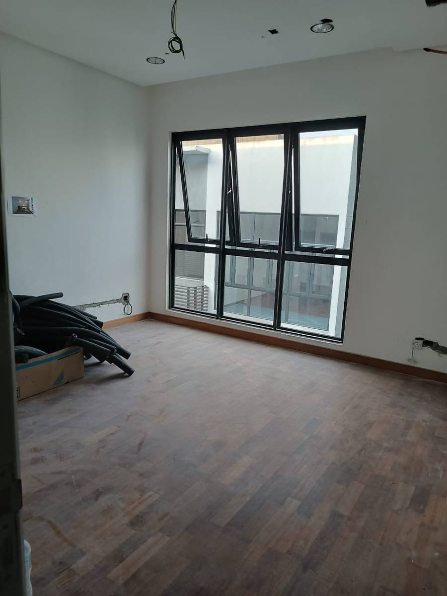
FotoRuang kosong, lantai kayu -
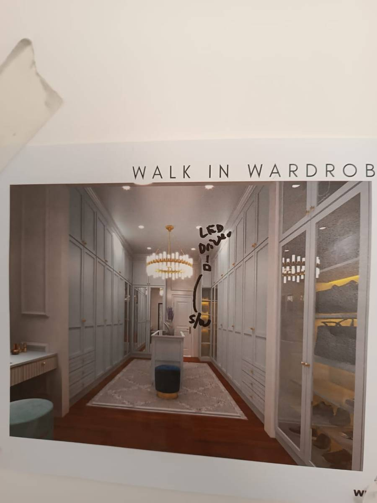
RenderWalk-in Wardrobe -
VideoKerja hacking & perobohan(binahaus.com) -
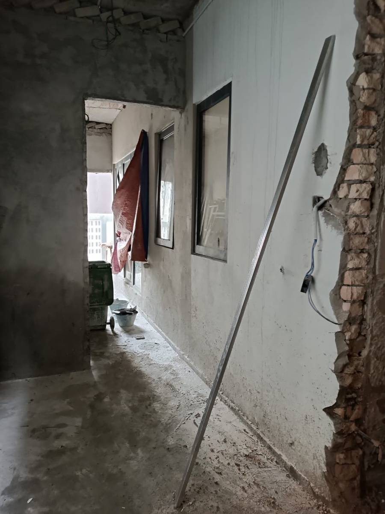
FotoKerja plaster, dinding bata -
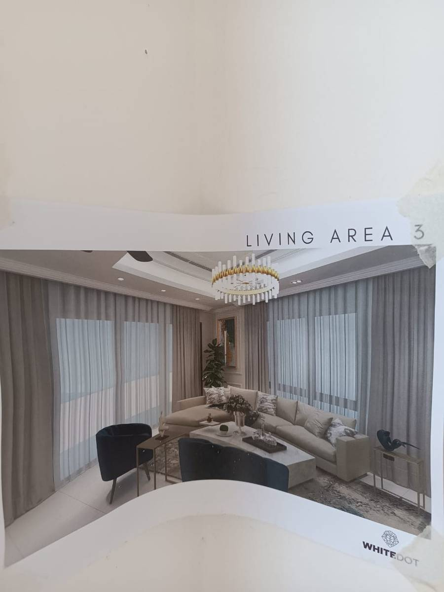
RenderLiving Area -
VideoJubin lantai & dinding(binahaus.com) -
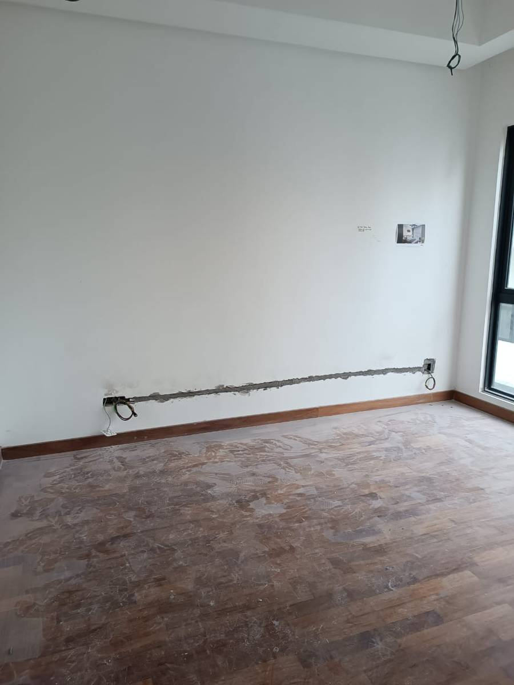
FotoRuang kosong, lantai kayu -
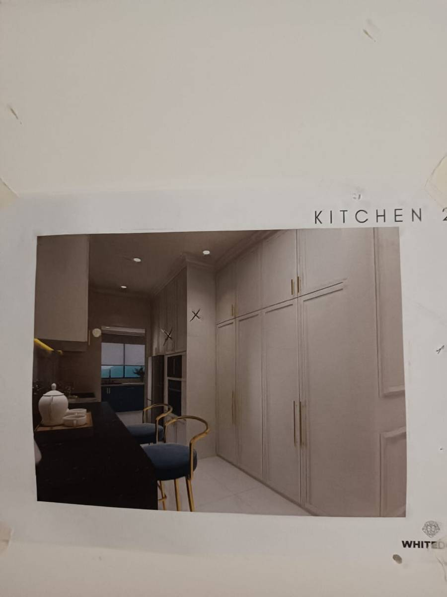
RenderKitchen -
VideoLantai & skirting(binahaus.com)
Cara Kami Kerja.
Satu proses yang jelas, dari mula sampai siap.
A clear process from start to finish. Di setiap langkah ada keputusan reka bentuk yang dibuat, bukan selepas kerja bermula.†
-
01
Consultation
We start by understanding what you need and the scope of your project.
Reka bentuk bermula di sini: cara guna ruang, bukan senarai kerja.†
-
02
Site Visit
Our team visits the site to assess the space and understand the work required.
Kami ukur dan tanda di tapak. Angka ini yang jadi lukisan.†
-
03
Quotations
You receive a quotation based on the agreed scope of work.
Setiap harga berpasangan dengan bahan dan kemasan yang dipilih, jadi anda tahu apa yang anda bayar.†
-
04
Construction
Once everything is agreed, our team begins the work on site.
Pasukan yang sama memegang lukisan dan memegang tukul, jadi keputusan boleh dipinda di tapak tanpa hilang niat asal.†
-
05
Handover
When the work is completed, we hand the finished project over to you.
Kami semak ruang siap terhadap lukisan, dan serahkan apa yang diputuskan dari awal.†
One team.
One project.
One responsibility.
Kenapa Pilih Kami?
Renovation and construction can involve many moving parts. With Bina Haus, you have one team to communicate with throughout the project. From consultation and site visit to construction and handover, you know who you're dealing with at every stage.
One project. One point of responsibility.
About Us
We build spaces for everyday life.
- CompanyBina Haus, renovation & construction
- ServesHomes, offices and commercial spaces
- ScopeFull house renovations · individual works · new build · extension · structural
- FocusDo the work properly. Keep the process clear. Deliver the space.
Bina Haus is a renovation and construction company serving homes, offices and commercial spaces. Our work ranges from full house renovations and individual renovation works to new house construction, house extensions and structural works.
Kerja kami bermula dengan lukisan dan berakhir dengan ruang siap, oleh pasukan yang sama.†
Whatever the scale of the project, our focus remains the same: Do the work properly. Keep the process clear. Deliver the space.
Ruang dibina dengan rasa
Because a space is more than walls, floors and finishes. It's where people live, work and spend their everyday lives.
So when we build or renovate a space, the work should feel considered from beginning to end. Bina Haus. Ruang dibina dengan rasa.
Planning to renovate
your space?
Tell us what you need and let's start with a conversation.